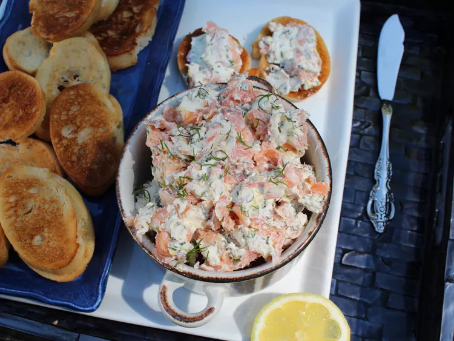

Back to Home
Smoked Salmon

Description
This smoked salmon dip combines cream cheese, fresh lemon juice and
zest, dill, capers, and red onions with smoked salmon. It’s a fancy
and yet simple dish to take to a party or serve at home as an
appetizer. Make ahead if you like and serve cold with sliced
baguette.
Ingredients
- 1 (8 ounce) package cream cheese, softened
- 6 ounces smoked salmon, diced
- 2 tablespoons finely chopped fresh dill
- 1 lemon, zested
- 1 tablespoon lemon juice
- 1/2 tablespoon finely chopped capers
- 1 tablespoon finely chopped red onion
Steps
-
Stir cream cheese, salmon, dill, lemon zest, lemon juice,
capers, and red onion together in a large bowl until well
blended. Cover and refrigerate until ready to serve. Garnish
with additional dill, if desired.
Back to Home